Mechanical
IP Camera & CCTV Mechanical DVT
Reliability validation (IPX6/IPX7 waterproofing, focus/SFR, acoustic, spring/pin mechanisms) for consumer IP camera and CCTV programs, from EVT through mass production.
Mechanical · Aerospace · AI · Tech · Systems Engineer
Batam, Indonesia
R&D Mechanical Engineer at Pegatron with an aerospace engineering background. I lead mechanical DVT and NPI for IP cameras and CCTV — reliability validation, root-cause analysis, and design — while building software and AI systems on the side. I care about product quality, systems thinking, and turning ambiguity into shipped, efficient outcomes.
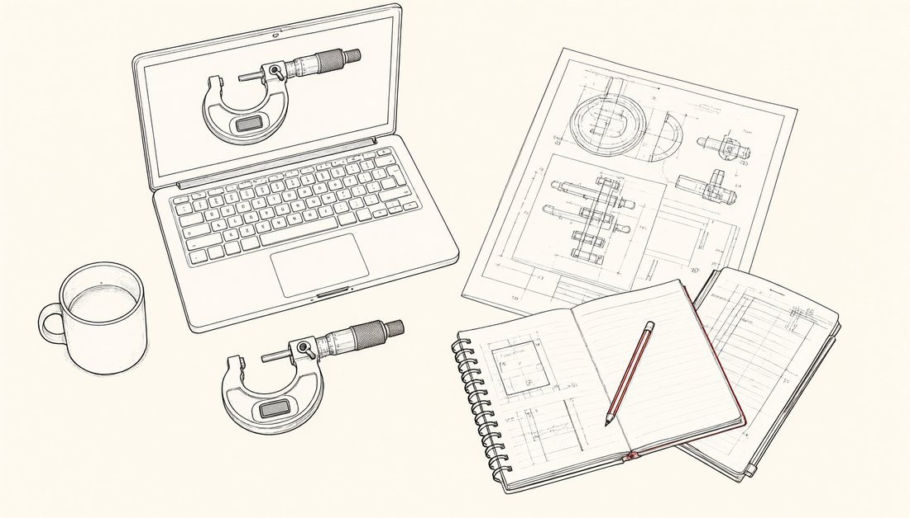
Earlier personal projects and experiments live at bio.site/juw
PEGATRON / PT Pegatron Technology Indonesia, Batam, Indonesia
PT Anugerah Tirta Indonesia, Indonesia
Software projects ship three versions — App (installable), Web (desktop browser) and Mobile. Open one and try it yourself.
Reliability validation (IPX6/IPX7 waterproofing, focus/SFR, acoustic, spring/pin mechanisms) for consumer IP camera and CCTV programs, from EVT through mass production.
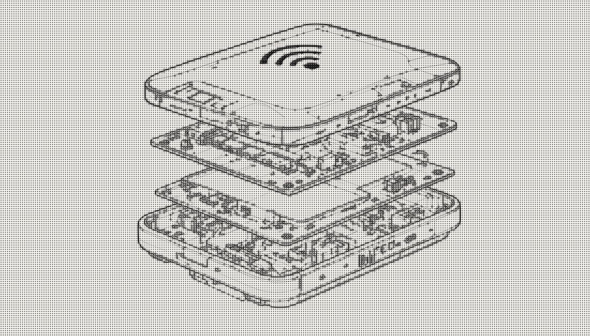
Led 6–12 month EVT-to-MP programs across 2–3 concurrent Wi-Fi projects; coordinated cross-functional teams and customers, led a team of 2 engineers and mentored 5–7.
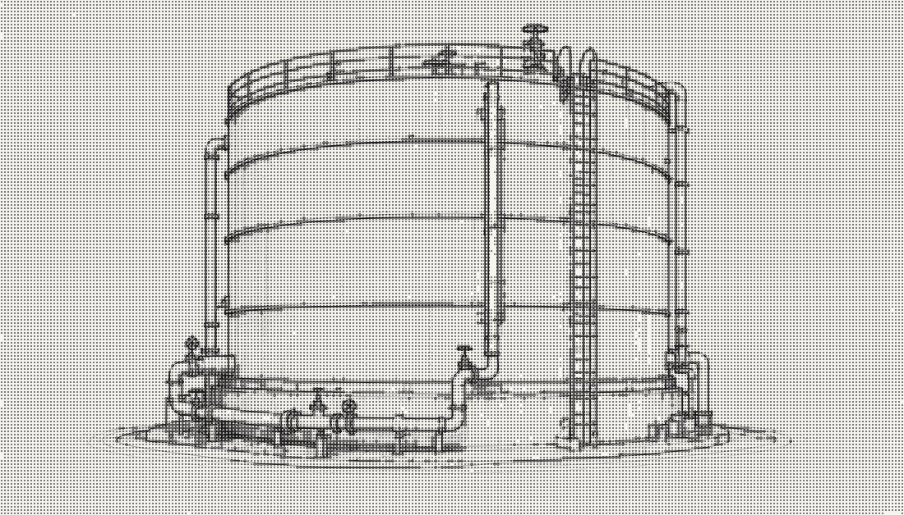
Coordinated water-tank fabrication projects end-to-end: schedules, BOM, Bill of Quantities cost models, cutting plans, and pipe installation.
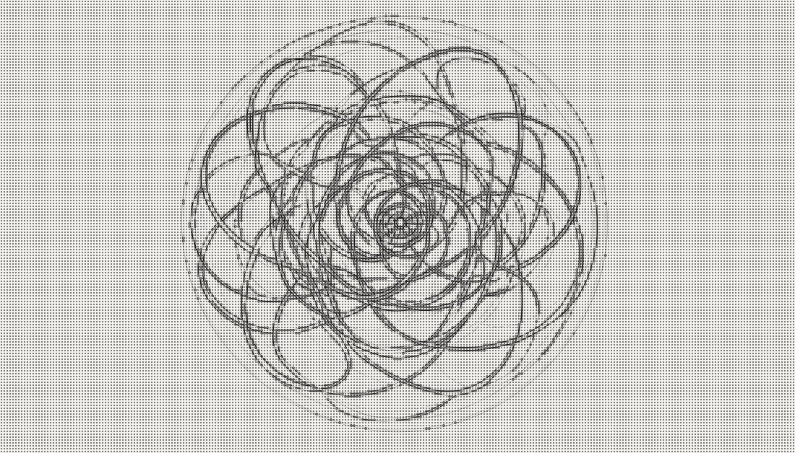
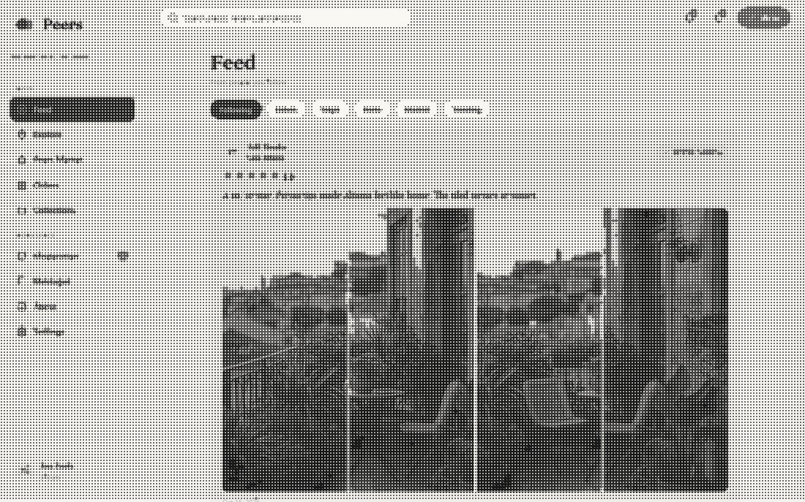
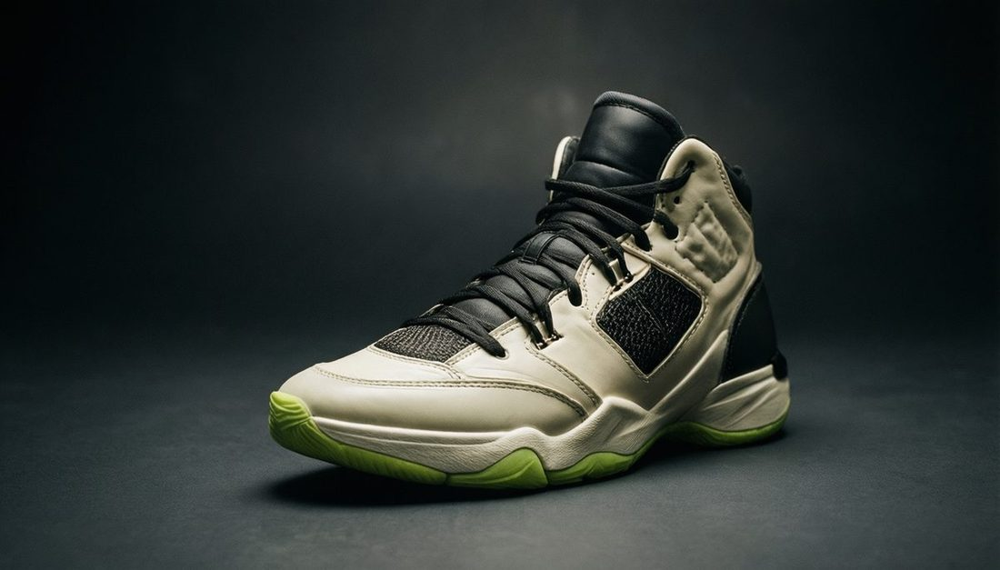

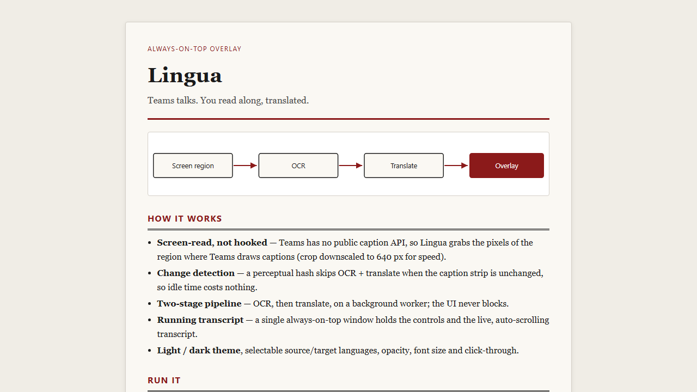
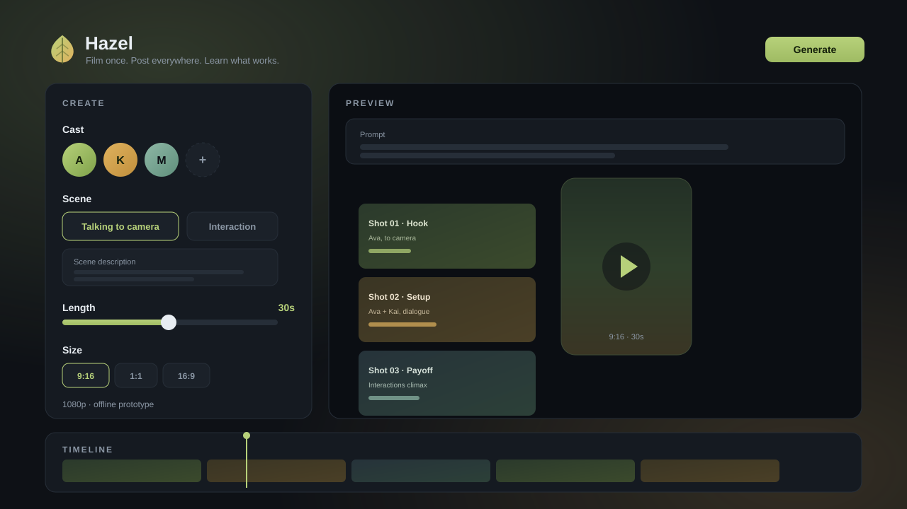
Desktop studio for creators. Generate a video from a prompt — cast the characters, choose a talking or drama scene, set the length and size — then refine it in Hazel's built-in editor and deploy to every platform at once. Also bulk-uploads photos and videos to socials, and backs up and auto-manages memories so your storage never overfills.
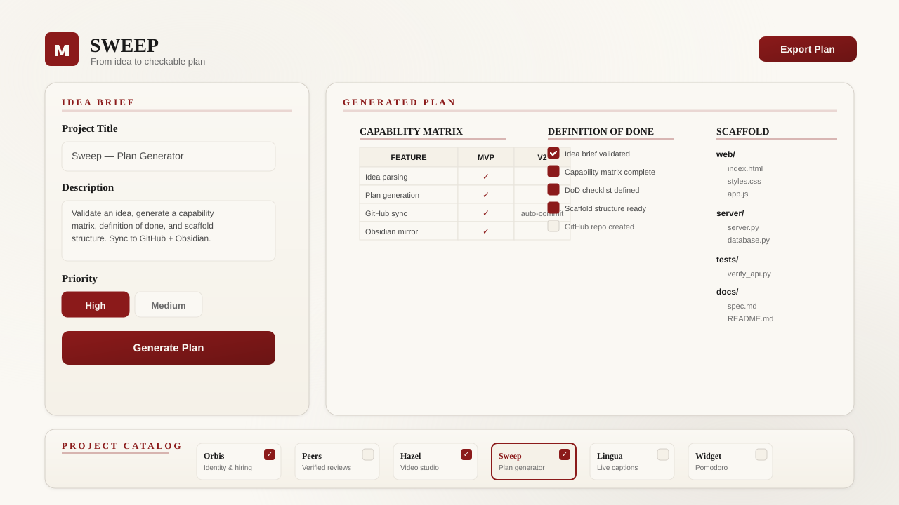
Turn a rough app idea into a checkable Build → Grow → Earn plan — all local, offline and deterministic. A guided intake drafts your brief from plain words (no AI, no network); Sweep generates a capability matrix, a Definition of Done, a phased roadmap, Grow and Earn checklists, verification gates and a scaffold generator. Then run its built-in Operator (Otto) — a local, deterministic agent you actually chat with, organised into Overview / Create / Grow / Money / Data tabs. Otto drafts your brand kit (logo, palette, type), a one-page site, per-network posts with generated art, emails, customer outreach, a market-research brief, a pitch deck, a content calendar, a unified inbox, multi-sheet sales / stock / cost ledgers with an insights view and a plans table — all routed through an approval queue with a run log, undo, a credits meter and an autopilot toggle. Offline, encrypted at rest, fully exportable — you own everything, with no fee and no credit meter.
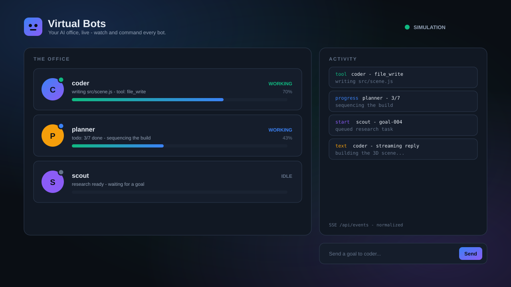
An office of AI bots you can watch and command — each bot shows its role, live status and progress; a normalized activity feed streams every tool step, and you can dispatch new goals. Ships as an installable App, a desktop Web dashboard (with a 3D office) and a Mobile view; it runs as an offline simulation when no backend is attached.

A dependency-free browser console that replaces the TeraTerm/CWD serial workflow for AIRIZ device motor testing — browse a categorised command library with live parameters, drive a dark serial console with scrollback and log saving, build and run test macros in a visual notepad, install it as an offline PWA, and try the whole UI in a hardware-free demo mode.
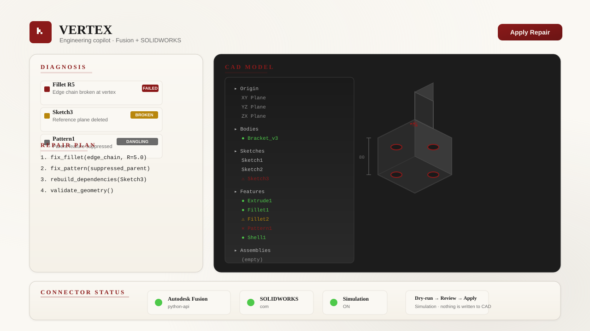
Vertex is one local, offline, zero-dependency 3D app that unifies a parametric part builder with a universal 3D engineering copilot. Build geometry from parameters/primitives and export real 3D files (STL ascii+binary, OBJ, glTF 2.0, 3MF, DXF); read a host-agnostic ModelReport and get a typed Diagnosis of what is broken (failed fillets, broken references, dangling or circular dependencies, failed mates) with an ordered upstream-first Repair plan and an Assembly plan (base part + insert/mate steps + structural checks); ask questions about the design and get deterministic Answers with evidence (failed features, dependencies, mates, how-to); reverse-engineer a point scan into editable parametric CAD; turn a drawing spec into a model; run batch Automation (export / pattern / drawing sheets); and run deterministic simulations (kinematic assembly motion, mass properties, clearance/interference). A universal adapter layer covers Fusion, SOLIDWORKS, FreeCAD, Blender, Onshape, Rhino, SketchUp, Inventor, AutoCAD, CATIA, Solid Edge, Creo, Maya and open formats STEP/STL/OBJ/glTF/3MF/DXF. The geometry core is a pure function (identical input yields byte-identical output); every action passes a dry-run and review gate; with no CAD host attached it runs in a fully usable simulation mode and never writes to CAD. It complements cloud AI CAD copilots (like Vector) by staying local, open, deterministic, auditable and review-gated.

SOMA is an open-source desktop CAD app where a coding agent does the CAD — you describe the part, the agent writes it as CadQuery Python, and SOMA rebuilds and shows the result on every change. Measure, mark up the view, tune parameters, step through history, run overhang and wall-thickness checks plus FEM analysis, then export STEP/STL/3MF/DXF with PDF drawings. Bring your own CLI agent (Claude Code, Codex, OpenCode, Gemini CLI). By Kai Jungsthäfel. GPL-3.0. Windows / macOS / Linux.
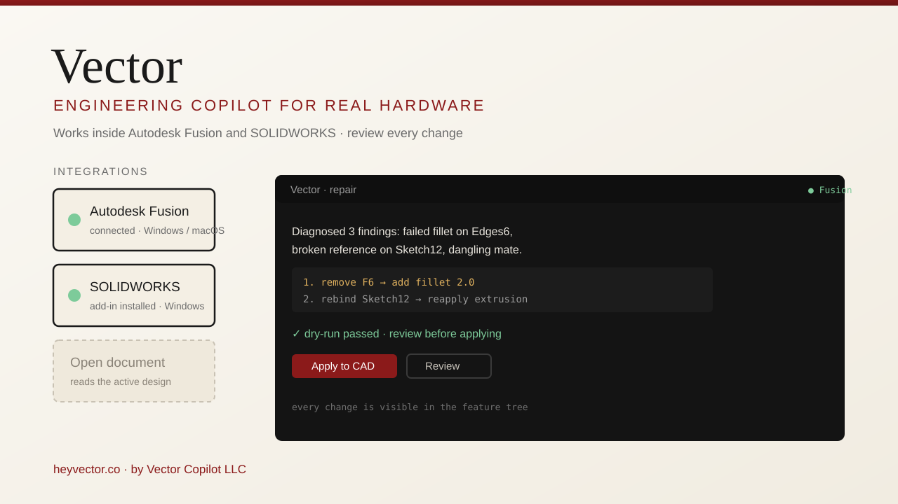
Vector is an AI engineering copilot for real hardware that runs inside your existing CAD — Autodesk Fusion (macOS / Windows) and SOLIDWORKS (Windows). It reads the open document, answers questions about the design, creates and edits native features through the host application's own API, repairs broken models end to end (failed fillets, broken references, features that stop rebuilding), and shows every change for review before it lands in your feature tree. By Vector Copilot LLC.
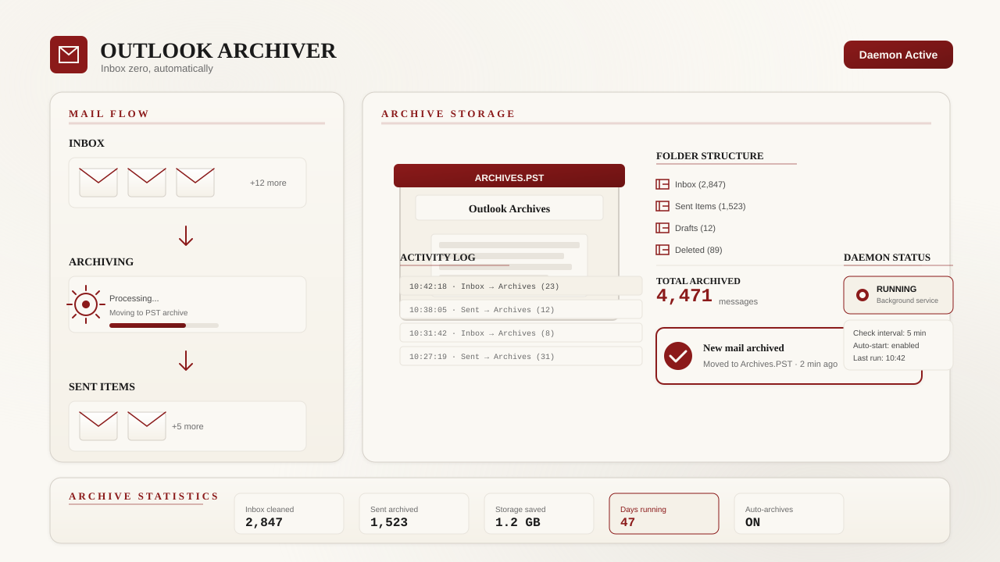
A small Windows background daemon that keeps the live Outlook Inbox and Sent Items clean — every message is logged, popped as a desktop toast, and moved into a separate “Archives” data file (PST). Runs at logon, with a control script, a watchdog, and a one-shot sweep of everything already in the mailbox.
Bachelor's Degree, Aerospace, Aeronautical and Astronautical Engineering
2018 – 2022
Interested in collaborating or have a question? Feel free to reach out.